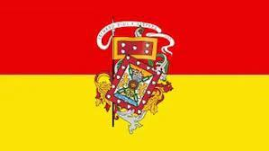
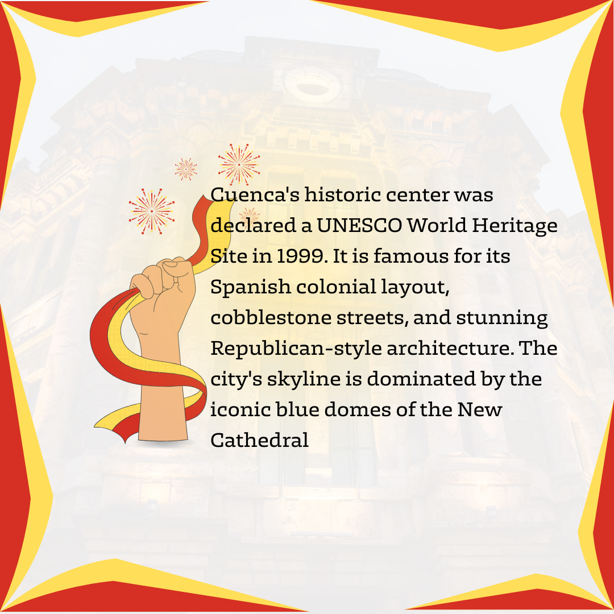
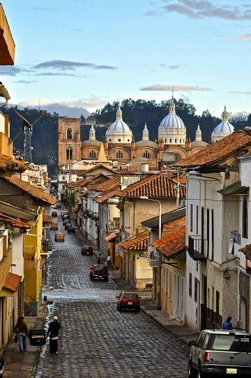
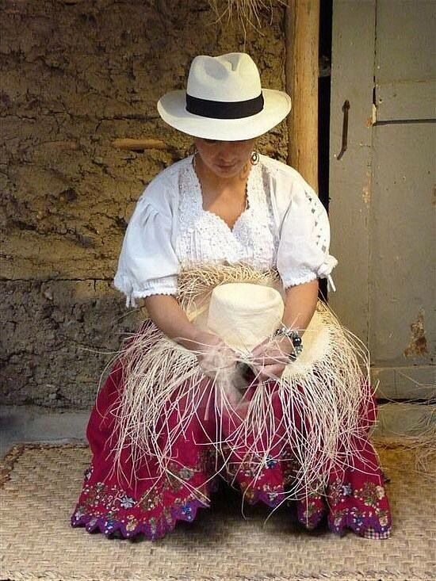

- The beautiful city of the four rivers. A historic corner in the Ecuadorian Andes known for its cobblestone streets, its colonial marble architecture, and its great cultural and artistic legacy.
- The city has strong traditions in art, crafts, music, and festivals that reflect its indigenous and Spanish roots.
- Cuenca sits at high altitude in the southern Ecuadorian Andes, giving it a cool climate and beautiful natural surroundings.
- It is especially famous for Panama hats (which actually originated in Ecuador) and skilled local artisans.
- Cholas Cuencanas are an important symbol of Cuenca’s cultural identity.They are known for their colorful and elegant outfits. Outfits that represent indigenous and mestizo heritage.


